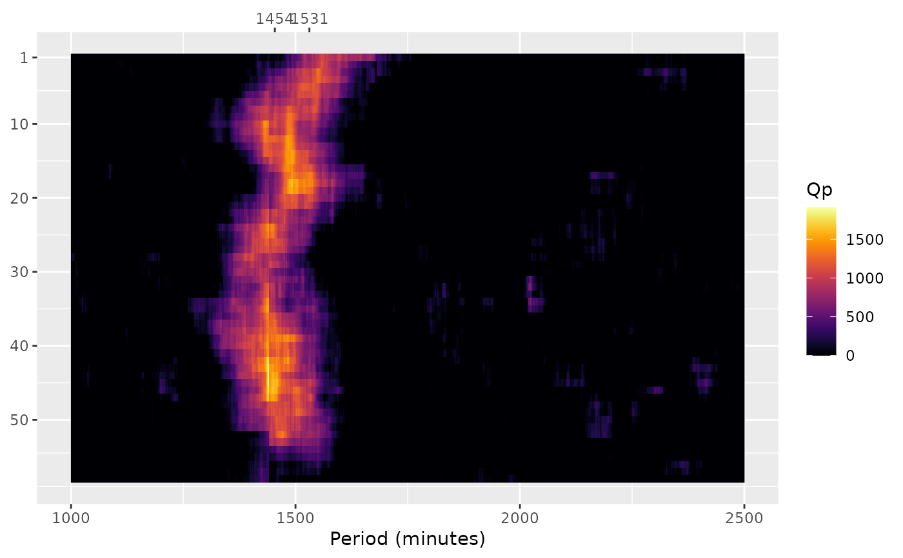

Create a spectrogram plot based on Sokolove & Bushell's periodogram
Source:R/spectrogram.R
spectrogram.Rdspectrogram() computes a series of Sokolove & Bushell's (1978)
\(\chi^{2}\) periodograms to visualize changes in periodicities
across intervals within a tsibble object.
This function enables the detection of temporal variations in rhythmicity by generating periodograms for consecutive or overlapping time windows.
See the periodogram() function for details on periodogram
computation.
Usage
spectrogram(
data,
col,
p_unit = "minutes",
p_min = 1000,
p_max = 2500,
p_step = 1,
int_unit = "days",
int_n = 7,
int_step = 720,
alpha = 0.05,
print = TRUE
)Arguments
- data
A
tsibbleobject.- col
A string indicating which column of
datato use.- p_unit
(optional) A string indicating at which time unit the index must be aggregated. By aggregating the index, this will change the time series interval and, consequently, its
pperiods. Valid values are:“seconds”,“minutes”,“hours”,“days”,“weeks”,“months”,“quarters”, and“years”) (default:"minutes").- p_min
(optional) An integer number indicating the minimum period (\(p\)), with the same unit as
p_unit, to compute the test (e.g., ifp_unit = "minutes",p_min = 1means a period of 1 minute) (default:1000).- p_max
(optional) An integer number indicating the maximum period (\(p\)), with the same unit as
p_unit, to compute the test (default:2500).- p_step
(optional) An integer number indicating the range of values that must be skipped between computing one test and the next (e.g., when
p_min == 1,p_max == 7, andp_step == 2, the test periods will be1,3,5, and7) (default:1).- int_unit
(optional) A string indicating the interval unit. Valid values are:
“seconds”,“minutes”,“hours”,“days”,“weeks”,“months”,“quarters”, and“years”) (default:"days").- int_n
(optional) An integer number indicating the size of the intervals, with the same unit as
int_unit(default:7).- int_step
(optional) An integer number indicating the amount of epochs to advance at the end of each interval (default:
720).- alpha
(optional) A number, from
0to1, indicating the significant level required for the peaks. The spectrogram plot only shows the significant peaks (default:0.05).(optional) A
logicalvalue indicating if the function must print the spectrogram plot (default:TRUE).
Value
A list object with the following elements:
periodograms: Alistobject with the periodogram data for each interval. Seeperiodogram()to learn more about the list elements.spectrogram: Aggplotobject with a heat map chart showing one periodogram per line (q_p) (y) by the period sequence (p_seq) (x).
References
Sokolove, P. G., & Bushell, W. N. (1978). The chi square periodogram: its utility for analysis of circadian rhythms. Journal of Theoretical Biology, 72(1), 131-160. doi:10.1016/0022-5193(78)90022-x .
See also
Other period analysis functions:
periodogram()
Examples
if (curl::has_internet()) {
file <- get_from_zenodo(
doi = "10.5281/zenodo.4898822",
dir = tempdir(),
file = "processed.txt"
)
data <- read_acttrust(
file,
tz = "America/Sao_Paulo"
)
spec <- spectrogram(data, "pim")
}
#> ℹ Reading data
#> ✔ Reading data [137ms]
#>
#> ℹ Tidying data
#> ✔ Tidying data [411ms]
#>
#> ℹ Validating data
#> ℹ Found 2 gap in the time series: 2021-04-26 03:14:00/2021-04-26 03:14:00 and 2021-05-01 17:34:00/2021-05-01 17:34:00 (showing up to a total of 5 values).
#> ℹ Validating data
#> ℹ Found 21 offwrist blocks in the time series. All values were set as NA.
#> ℹ Validating data
#> ✔ Validating data [18.2s]
#>
#> ! data[[col]] has missing values. Results may diverge.
#> Computing periodograms ■■ 3% | ETA: 29s
#> Computing periodograms ■■■■ 10% | ETA: 28s
#> Computing periodograms ■■■■■■■ 21% | ETA: 24s
#> Computing periodograms ■■■■■■■■■■ 29% | ETA: 21s
#> Computing periodograms ■■■■■■■■■■■■■ 40% | ETA: 18s
#> Computing periodograms ■■■■■■■■■■■■■■■■ 50% | ETA: 15s
#> Computing periodograms ■■■■■■■■■■■■■■■■■■■ 60% | ETA: 12s
#> Computing periodograms ■■■■■■■■■■■■■■■■■■■■■■ 71% | ETA: 9s
#> Computing periodograms ■■■■■■■■■■■■■■■■■■■■■■■■■ 79% | ETA: 6s
#> Computing periodograms ■■■■■■■■■■■■■■■■■■■■■■■■■■■■ 90% | ETA: 3s
#> Computing periodograms ■■■■■■■■■■■■■■■■■■■■■■■■■■■■■■■ 100% | ETA: 0s
#>
